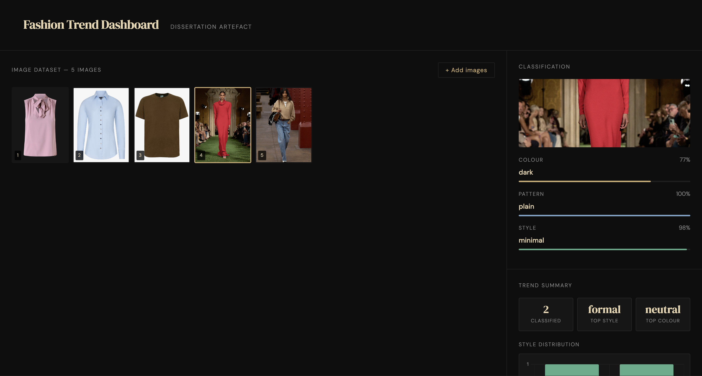

The Fashion Trend Dashboard is my dissertation artefact — an AI system that classifies fashion images by style, colour, and pattern using a trained machine learning model. Users upload one or more garment images and the tool returns a classification with confidence scores, a trend summary, and a style distribution breakdown.
Unlike the Micro AI Trend Forecaster which works with sales data, this tool works with images directly — making it closer to how a human trend analyst would work, looking at garments rather than spreadsheets.
